# Thesis Design ## Dr. [Fania Raczinski](http://fania.uk)
## Title / Topic <span class="amc">Algorithmic Meta-Creativity</span> Creative Computing and Pataphysics for Computational Creativity <br> #### Hongji Yang, Andrew Hugill, Sophy Smith, Jim Hendler
## Journey - started October 2010 fulltime - 1 year interuption 2014 - 2015 - started writing thesis in March 2015 - submitted thesis in December 2016 - viva in June 2017 - submitted corrections September 2017
# * My PhD was not **practice-based**.
Deliverables
Thesis
-
dr.physics.wtf
1
+
pdf
Artefact
-
pata.physics.wtf
Map
-
pamatamap.com
2
1 Web version: post submission, pre viva
2 Map: post viva
<!-- ## [Thesis](https://pata.physics.wtf) --> 
<!-- ## [Artefact](https://pata.physics.wtf) --> 
<!-- ## [Map](http://pamatamap.com) --> 
## [Thesis](https://dr.physics.wtf/files/FR-thesis-small.pdf) - written in [LaTeX](https://www.latex-project.org/) - 14 chapters, 5 appendices, in 8 parts ([Paris Metro](https://parisbytrain.com/wp-content/uploads/2014/01/paris-metro-mini-map-2014.pdf)) - ~ 60k words (without references + appendices) - 411 pages (262 without references + appendices) - see [regulations](http://www.dmu.ac.uk/documents/research-documents/graduate-school/cop-update-feb-2018/regulations/15.-presentation-of-thesis.pdf)
### [Organisation](https://dr.physics.wtf/html/contents.html) **[classic thesis structure:](https://www.vitae.ac.uk/doing-research/doing-a-doctorate/completing-your-doctorate/writing-and-submitting-your-doctoral-thesis/structuring-your-thesis)** - Introduction - Methodology - State of the Art - Claims / Contributions - Critical Analysis / Evaluation - Conclusion
### [More Contents](https://dr.physics.wtf/html/contents.html) - Un- / Related Work - Theory & Practice - Applications - Future Work
### [Core Contributions](https://dr.physics.wtf/html/contents.html) > describe **process** and **product** > in relation to new knowledge
### [Evaluation / Analysis](https://dr.physics.wtf/html/analysis.html) *Subjectivity* <i class="fas fa-arrow-circle-right highlight"></i> *Objectivity* **theoretical / practical / philosophical** No quantitative data analysis (e.g. questionnaires). each decision was analysed retrospectively in minute detail (numbers, numbers, numbers) (e.g. [Fig. 12.1](https://dr.physics.wtf/html/analysis.html#fig:12.1), [Tab. 12.3](https://dr.physics.wtf/html/analysis.html#tab:12.3), [Tab. 12.4](https://dr.physics.wtf/html/analysis.html#tab:12.4)) Note: 10k words for this chapter taking pieces out of the context of the subjective artwork and analyse them objectively meronym anectode (during analysis I found that i should have included meronyms and added that into the artefact then)
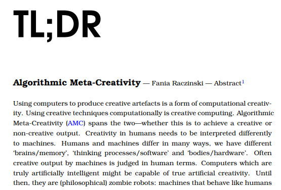
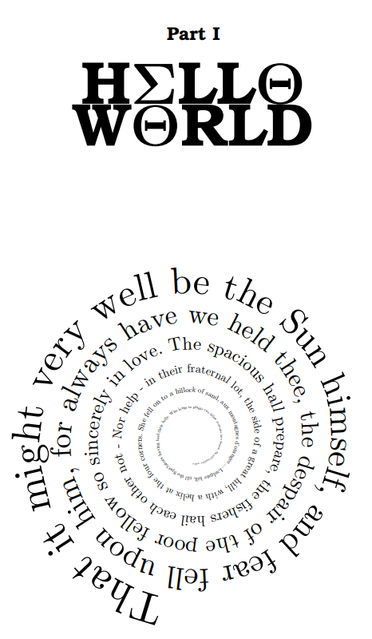 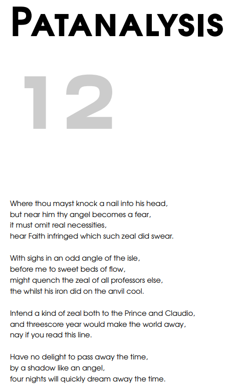
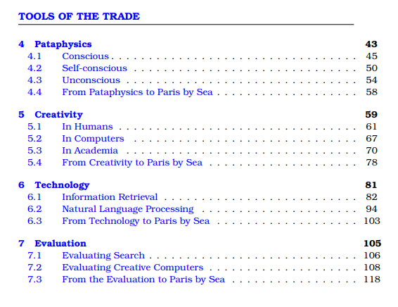
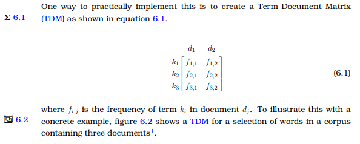
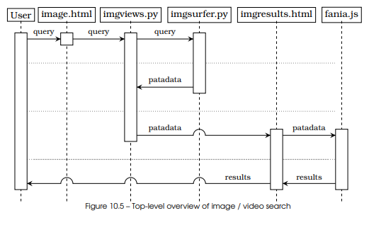
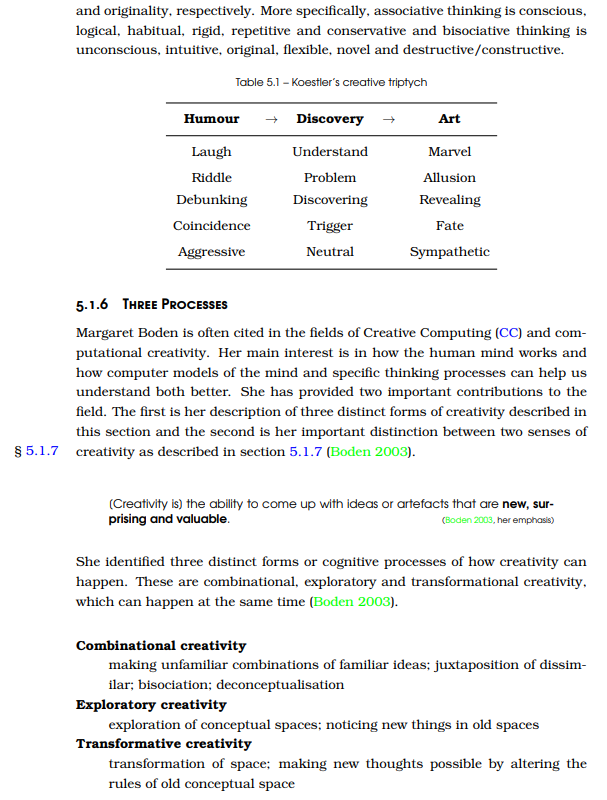 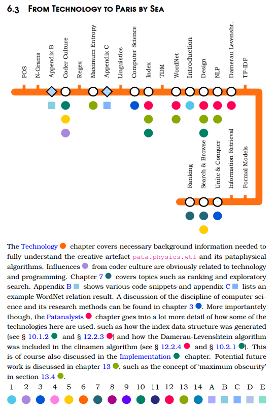
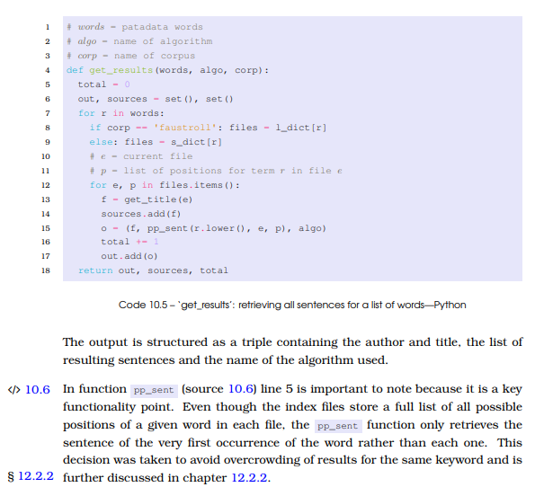
## [Dissemination](https://dr.physics.wtf/html/applications.html#s:talks) - IOCT postgrad showcase @ Innovation Centre (Jun 2016) - Creative Computing conference in Oxford (Mar 2016) - IOCT talk for [CAS](http://interactdigitalarts.uk/cas) @ Phoenix (Oct 2015) - IOCT LMS launch showcase @ DMU (Nov 2014) - IOCT PhD showcase @ Phoenix Cube (Aug 2014) - Digital Creativity journal article 24:3 (Nov 2013) - Creativity and Cognition conference in Sydney (Jun 2013) - TDC talk @ DMU (Feb 2013) - CONTENT conference in Rome (Mar 2011)
## Corrections - map - music - typos
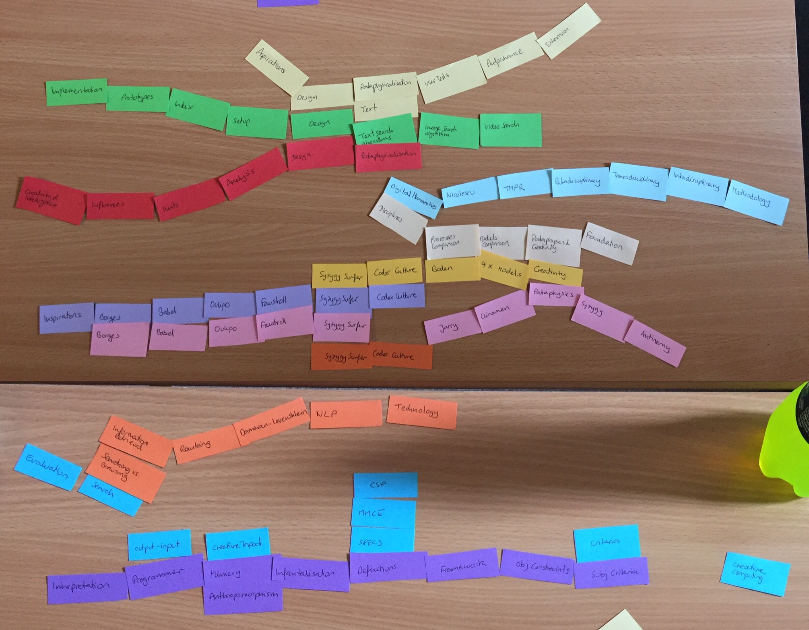
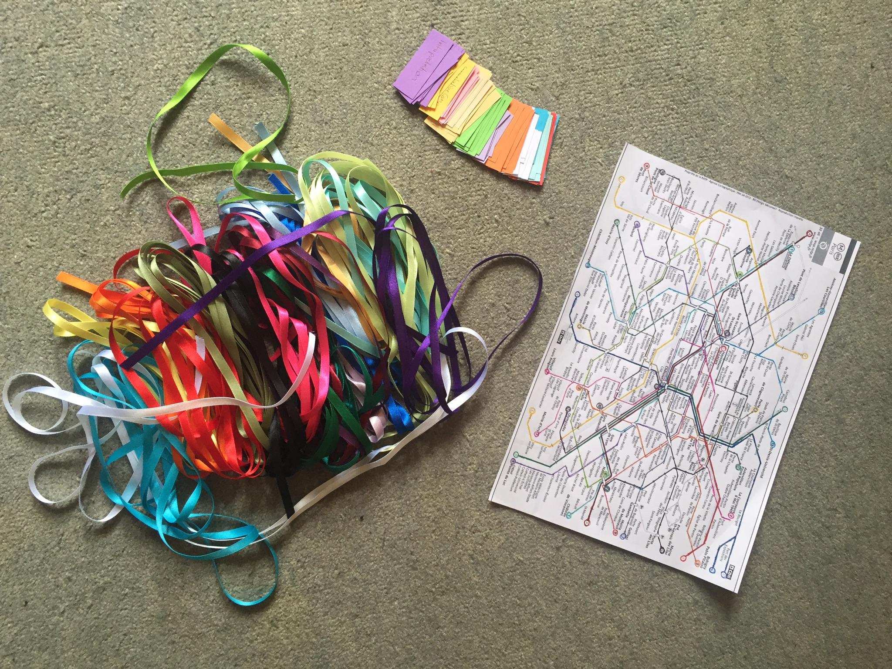
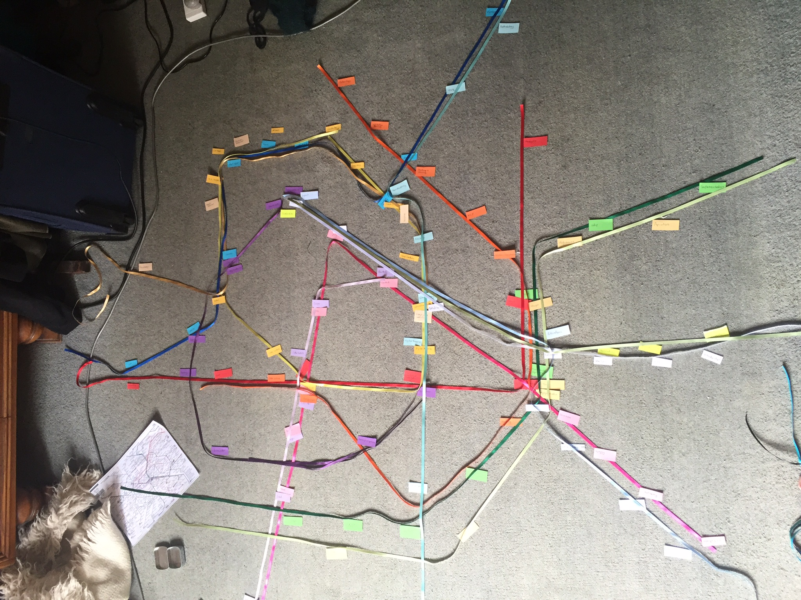
### [Thesis Map](https://dr.physics.wtf/files/FR-thesis-small.pdf#page=39)  Note:
### [Interactive Map](http://pamatamap.com)  Note: